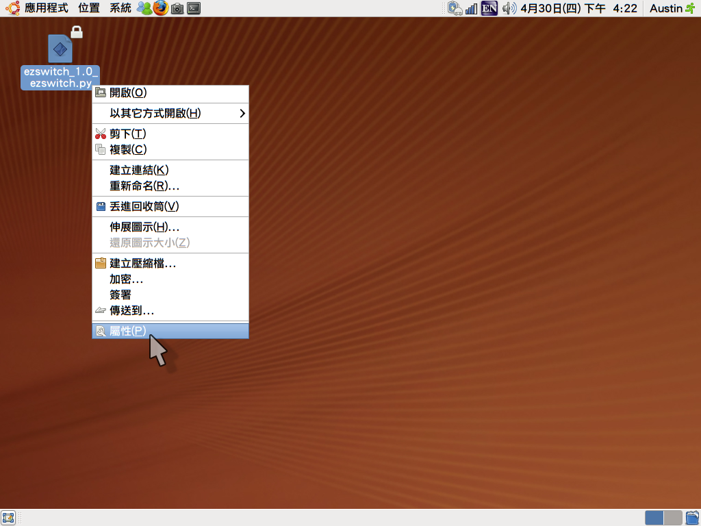

Easy Screen Switch Mode

Easy Screen Switch Mode 是一款基於 X11 平台的簡便螢幕模式切換軟體。[註1]對於任何基於 X11 視窗系統的攜帶型電腦使用者，提供切換外接／投影螢幕的操作介面。
以往 Linux／BSD 的愛好者在使用外接/投影螢幕時，常遇到 Function（功能）鍵無法正常運作，而不能正常切換本機／外接螢幕。通常需要重新啟動 X Window 或是在命令列下執行特別的指令，才能夠切換螢幕。
此軟體提供上述問題的解決方案。使用圖形化介面，不需以文字模式進行操作，也不再需要重新啟動 X Window 或重新開機才可使用外接／投影螢幕。非常適合常用簡報或投影的使用者。
軟體使用 MIT 自由軟體授權釋出，使用 Python 為主程式。專案目前放置於中央研究院資訊科技創新研究中心的自由軟體鑄造場平台上 [註3]。
歡迎大家下載使用，或一起參與此自由軟體專案。
軟體的操作方式很容易，首先於專案首頁下載最新版本（目前為 1.1版）。並放置於桌面上，
然後必須賦與軟體執行的權限才可正常執行。因此，先於軟體圖示上按一下滑鼠右鍵，並選擇「屬性」。

再選擇「權限」頁籤，並勾選「允許檔案做為程式執行」。
設定完成後，往後只需要在此軟體上按兩下滑鼠左鍵，並選擇「執行」，即可運作。
[註1] X11 是目前 Linux/BSD 常用的桌面視窗系統，如 Ubuntu、Fedora、RedHat、OpenSUSE 等皆使用 X11 為其桌面視窗系統，因此本軟體亦可執行於上述發佈套件上。